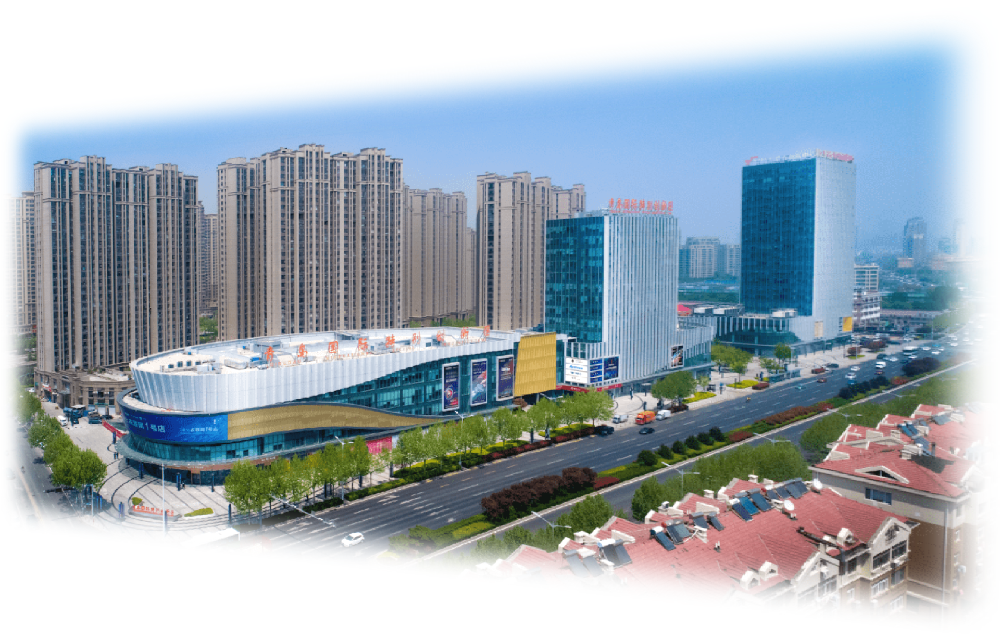

关于我们
青岛美凯麟科技股份有限公司创立于 2008 年，是集研发、生产、销售、服务于一体，为新能源电池行业提供专业、精准、可靠的测量测试和电池主动安全监测解决方案。经过十余年的技术创新和高标准的质量管理，无论在技术先进性上、还是产品可靠性上都已达到媲美进口产品水准。
美凯麟科技拥有国际领先的高性能功率变换技术、高精度测量技术、高速同步测控技术以及电池热失控主动预警技术；涵盖0-2000V电压，0-4800A电流，0.02%FS精度；产品包括电池单体、模组、电池包、电池簇测试设备，电池模拟器，化成分容电源以及电池主动安全监测系统等。至今美凯麟科技产品不断实现自我突破升级，从而满足新能源汽车和电力储能行业日益变化的测试需求，并具有以下优势：
专：美凯麟是专业服务于检测机构以及企业实验室且长期从事设计开发和生产研发用新能源电池测试系统的企业，产品营收占比超过95%。
精：美凯麟连年通过SGS公司审核的 ISO9001质量管理体系认证；知识产权管理认证，公司执行精细化管理，细节化实施，受到客户的广泛赞誉；多年被中国设备管理协会评为“年度用户满意供应商”。
特：美凯麟以客户需求和价值为中心，与行业主要竞争者进行差异化特色竞争：在保障测量精度方面，实现宽泛温度范围内保障精度，并在国内率先引领多电流量程；在保障汽车驾驶模拟工况方面，设备电流1ms上升时间，工况模拟无时间误差；在保障研发实验使用灵活性方面，为客户提供自由、灵活、可变量赋值的测试软件，满足了复杂的测试工艺。
新：美凯麟科技技术团队具有二十余年的国际行业从业经验，具有丰富的高端电池测试装备研制开发和工程化经验。公司积极开展产学研合作，联合山东大学、青岛科技大学等高校，开展技术和产品合作，承担国际基金项目、山东省级科研项目，并获批成立“新能源电池性能测试研发中心”，“电池测试专家工作站”。
“美凯麟”品牌已成为国内研发用电池测试系统的知名品牌，获得了一汽、上汽、北京奔驰、上汽通用、上汽大众、小鹏、中汽研、北京质检院、比亚迪、中创新航、中国电科院、南方电网、原子能院等头部检测机构、电动汽车企业和电池企业的认可和信赖。
美凯麟科技也放眼于海外市场，产品出口美国、日本、韩国等地，形成了满足各地法规的、完善的科技创新、质量管理和技术服务体系。美凯麟将立足于新能源电池测试领域，以“质量为先、科技为本、顾客为重、服务为诚”的理念和质量方针，持续开展技术研究和创新，为国家碳中和目标和社会的绿色发展贡献力量。
